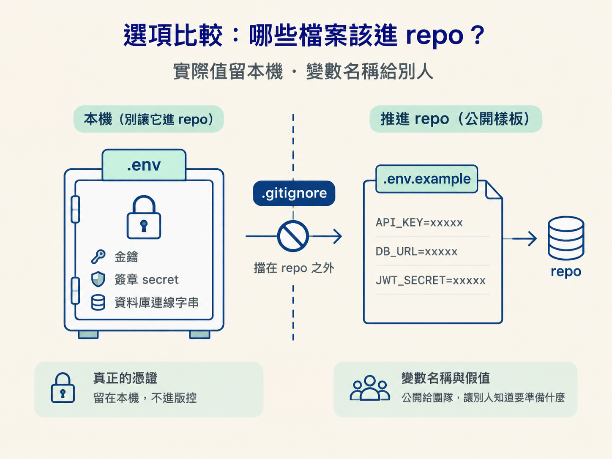

完成這一節後，你應該能判斷一個檔案該不該進 repo，知道如何用 .gitignore 把 .env 這類 secrets 擋在 repo 外，也能在 agent 偷偷改了設定時及早察覺。
你剛合併完 PR，切回 main，準備繼續下一個功能。這時你發現 main 上多了一筆 diff：某個設定檔裡出現了一個你不記得加過的環境變數，後面還跟著一串看起來像金鑰的字。
這種情況很容易發生。agent 為了讓功能跑起來，可能在背景順手把某個 key 寫進設定檔。如果這個檔案一路被 commit、push、merge，那串金鑰就可能已經躺在 GitHub 上了。
所以，這一節要處理的不是某個 Git 指令，而是每次提交前都要做的判斷：哪些檔案可以進 repo，哪些檔案永遠只能留在自己的電腦？判斷錯了，後果不只是畫面壞掉，而是別人可能拿你的金鑰去使用服務。
會有這個問題，是因為你想同時保住兩件事：專案要能重現，但真正的憑證又不能外流。
別人，或未來的你，clone 專案後，應該知道這個 app 需要哪些環境變數才能啟動；然而，這些變數的實際值可能是你的憑證，一旦曝光，就像把鑰匙交給陌生人。
課程裡三條 app 路線都採用同一種做法：把真正的憑證放在 .env，並將這個檔案排除在版控之外；另外提交一份 .env.example，只列出變數名稱與假的值。這樣別人知道要準備什麼，卻拿不到真正的鑰匙。

| 檔案 | 該不該進 repo | 原因 |
|---|---|---|
.env / .env.local | 不進，放進 .gitignore | 裡面可能有實際的金鑰、簽章 secret 或資料庫連線字串 |
.env.example | 要進 | 只列變數名稱與假值，讓別人知道需要補哪些設定 |
| 應用程式碼 | 要進 | 這就是專案本身，以及你產出的功能 |
| 設計參考圖等資產 | 看情況 | 它們與 secrets 無關，依檔案大小與用途決定 |
課堂上的實際做法是：第一次 commit 之前，先把 .env 與 .env.local 加進 .gitignore。如果這一步漏掉，之後每一次提交都可能是在把秘密往外送。
至於 .env.example，它是 agent 生成的樣板檔。你要把它複製成真正的 .env，再填入實際值；進 repo 的，則是那份沒有真實憑證的樣板。
# .gitignore
.env
.env.local死背規則很容易忘，但下面三個問題可以直接拿來檢查眼前的檔案。
.env.example 一起提交。第三個問題，正好能處理開頭那個情境。合併 PR 之後，要特別留意這類「意料之外的背景改動」，而不是把它當成小事放著不管。
看到不認識的改動時，先弄清楚它是什麼，檢查裡面有沒有敏感內容，再決定是否讓它進 main。diff 就像 agent 留下的腳印：不一定代表它做錯了事，但你至少要先看清楚它走過哪裡。
第一個反例是「看起來像金鑰，但其實是公開值」。有些變數原本就設計成可以出現在客戶端，例如某些服務的 publishable key。這類值外流時，不會讓別人直接取得你的私密權限，因此曝光不一定會造成災難。
不過，課程的慣例仍然是把它放進 .env。原因不是它一定是秘密，而是把所有環境變數集中管理，整體會比較清楚。真正的界線應該畫在「這個值有沒有私密性」，而不是單純看「檔名是不是 .env」。
第二個反例是「這批改動沒有牽涉邏輯」。這種情況下，直接 commit 到 main 可以是合理的，不必為了儀式感硬開分支。
但有一件事不會跟著翻轉：secrets 的檢查，和有沒有開分支無關。就算你只是要提交一個很小的設定改動，只要檔案裡有真正的金鑰，它就不該進 repo。
真正的憑證放在.env，並在提交前把它加進.gitignore；提交沒有真實值的.env.example，讓別人知道要補哪些變數。每次提交前都問自己：這裡面有沒有外流就會被冒用的東西？拿掉值之後，別人還知道要補什麼嗎？這筆改動是怎麼冒出來的？只要是 agent 在背景加的改動，就先看 diff，再決定要不要讓它進 main。
把這一節接回整個節點：先理解為什麼要審，再掌握分支與 PR 的模型、每天的提交流程，還有 AI 審查，最後確認什麼不能進 repo。這五步串起來，就是一套讓 agent 快速產出、又能被信任的收尾流程。
之後無論你換成自己的 app，或改用另一條 agent 路線，都可以把這套檢查重新跑一遍：看清楚要提交什麼，也看清楚哪些東西只能留在本機。